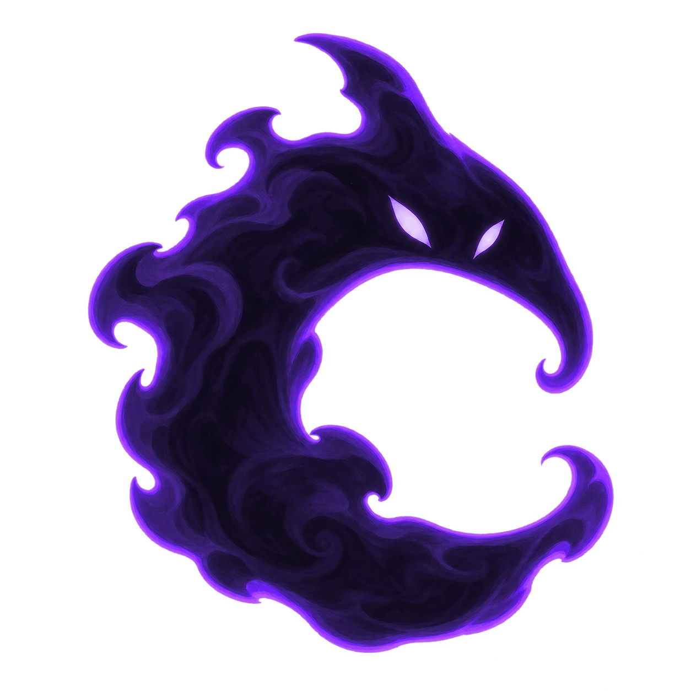
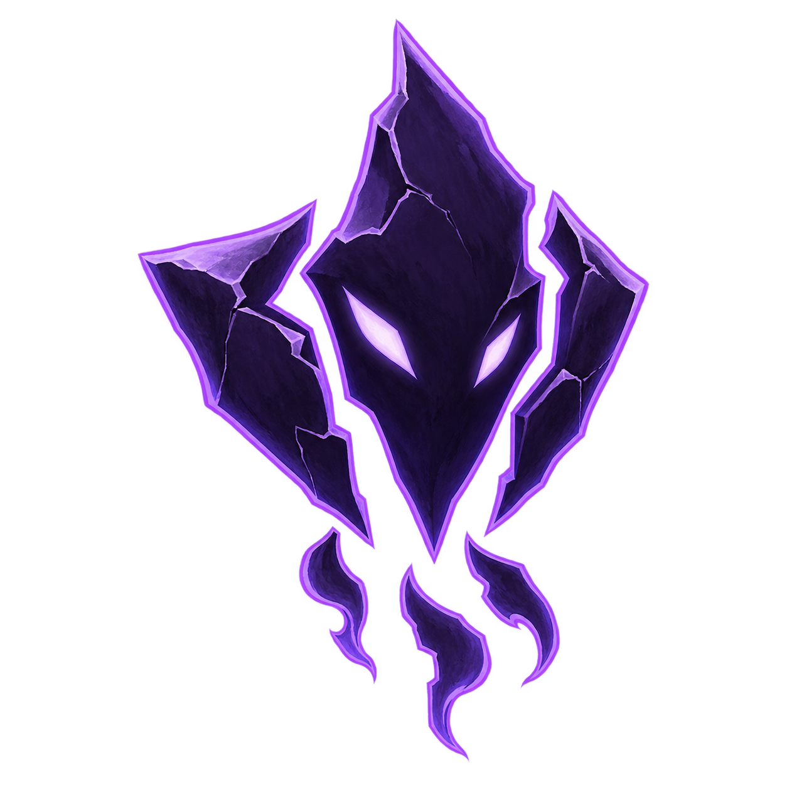
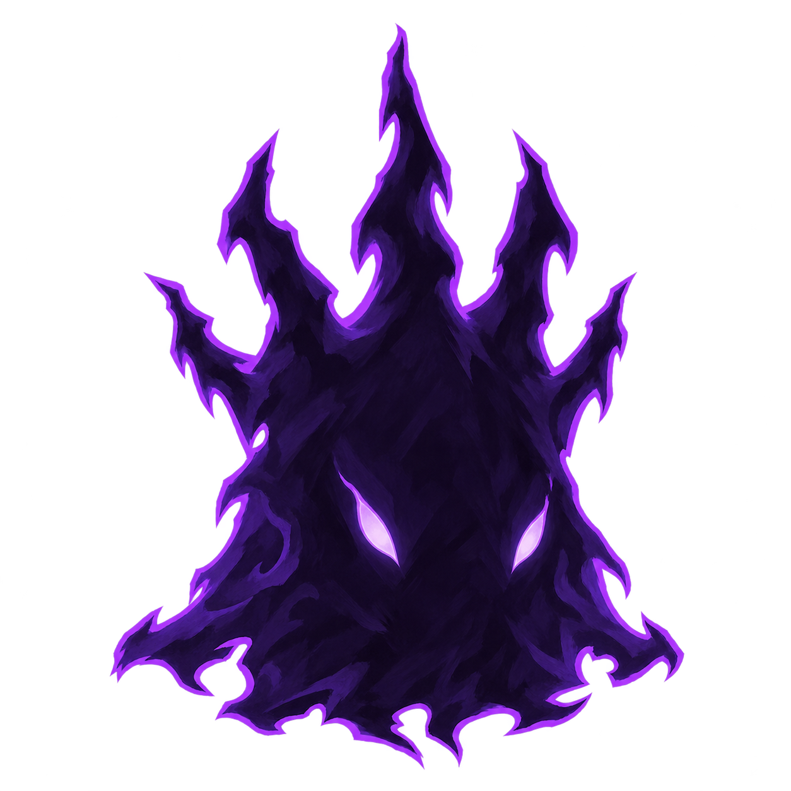
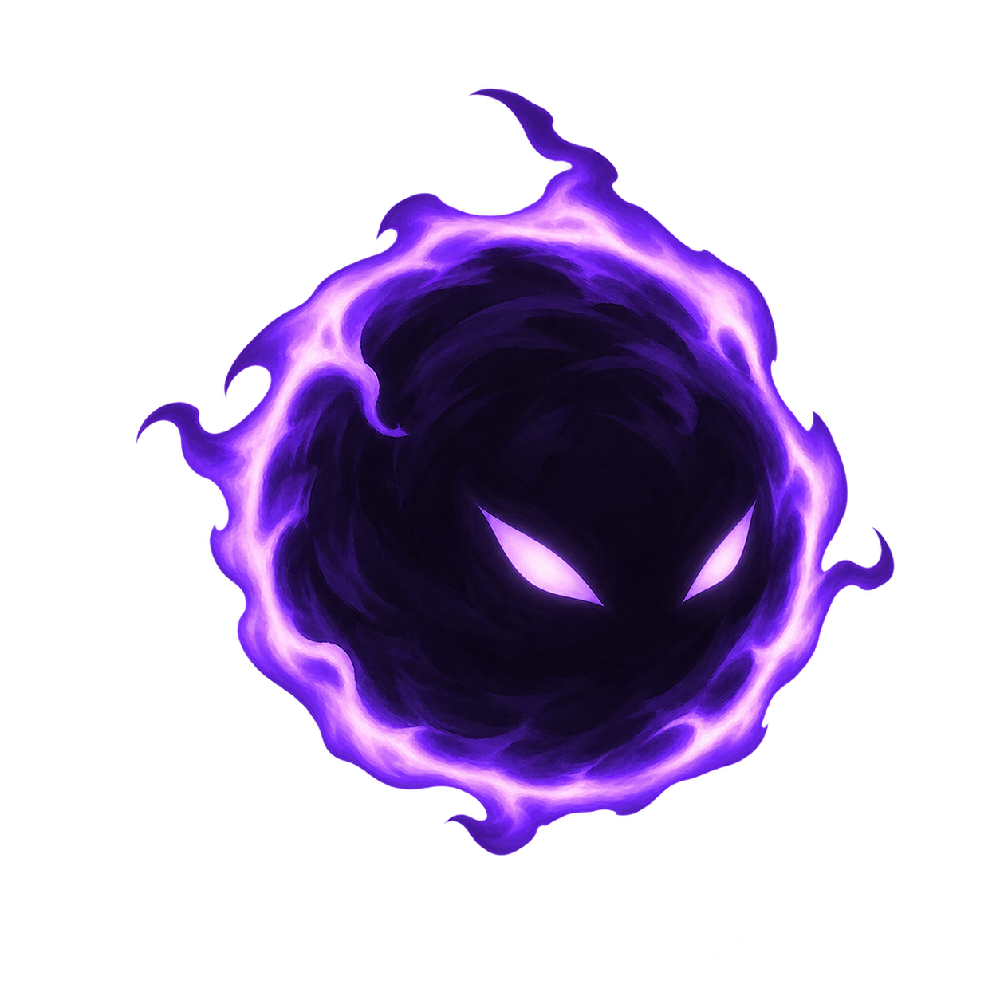
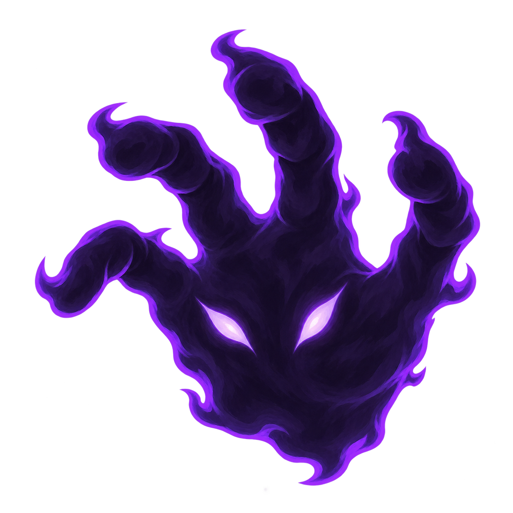
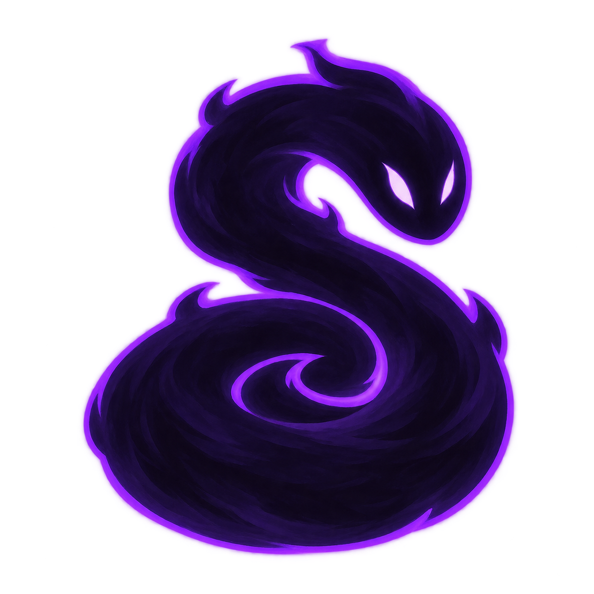
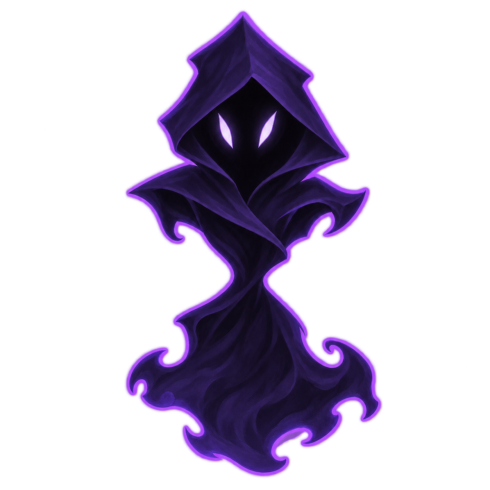

Patrol
Echo
Eight new silhouettes with distinct outlines · same patrol and Echo rules







Phone tile previews show each design as a solid patrol and a paler Echo. These are visual studies; actual visibility in normal play still needs testing.